Chapter 7 Stationary Combustion of Fuels
7.1 Domestic Natural Gas
7.1.1 Emissions
Introduction
These categories estimate criteria pollutant (particulate, organic, NOx, SOx, and CO) and GHG emissions (CO2, CH4, and N2O) resulting from the combustion of natural gas in the residential sector. Natural gas consists of a high percentage of methane (generally above 85 percent) and varying amounts of ethane, propane, butane, and inert gases. The combustion of natural gas in the residential sector is broken down into three categories: Space Heating, Water Heating, and Cooking. Categories 283, 284, and 285 account for area source emissions from Space Heating, Water Heating, and Cooking, respectively. Design of residential boilers and furnaces generally resemble fire tube type boilers with flue gas traveling through several channels or tubes with water or air circulated outside the channels or tubes.
Methodologies
Total natural gas usage for these categories was obtained from the California Energy Commission (CEC), the Pacific Gas and Electric Company (PG&E), and the city of Palo Alto. This total natural gas usage was broken down into three categories based on information from CEC and PG&E, and is shown below.
| Category | Category | Percent |
|---|---|---|
| 283 | Space Heating | 57.3% |
| 284 | Water Heating | 38.5% |
| 285 | Cooking | 4.2% |
Emission factor information for natural gas combustion was obtained from the U.S. Environmental Protection Agency’s (EPA’s) document AP-42, the U.S. Department of Energy’s (DOE’s) Energy Information Administration (EIA) and the California Energy Commission (CEC).
The natural gas combustion emission factors for these categories, in pounds per million cubic feet (Lb/MMCF) are shown below.
| Category | PART | ORG | NOX | SO2 | CO | CO2 | CH4 | N2O |
|---|---|---|---|---|---|---|---|---|
| All | 7.6 | 11 | 94 | 0.6 | 40 | 120000 | 2.3 | 2.2 |
County Distribution
Natural gas information provided by CEC and PG&E includes residential, commercial, and industrial usage for the Bay Area nine counties by month. Information on Palo Alto’s natural gas usage was obtained separately from the City of Palo Alto and was used together with Santa Clara County natural gas usage values. This was done because the city obtained gas from a supplier other than PG&E. Solano and Sonoma Counties are partially in the San Francisco Bay Area Air District, so data were used for the cities that are in the District. For Solano County, data used were for Benicia, Fairfield, Suisun and Vallejo; for Sonoma County, data used were for Cotati, Petaluma, Rohnert Park, Santa Rosa, Sebastopol and Sonoma.
Temporal Variation
Space Heating
Daily Activity: The maximum activity occurs in the early daylight hours and in the evening hours, with average activity during the day and low activity at night.
Weekly Activity Code: The activity is uniform seven days a week.
Monthly Activity: The monthly activity was based on monthly residential natural gas sales from the California Energy Commission. Activity occurs from November to June, with the highest months being December through April.
Water Heating
Daily Activity: The maximum activity occurs in the early daylight hours and in the evening hours, with average activity during the day and low activity at night.
Weekly Activity: The activity is uniform seven days a week.
Monthly Activity: The monthly activity is assumed to be uniform throughout the year.
Cooking
Daily Activity: The activity occurs during meal time hours.
Weekly Activity: The activity is uniform seven days a week.
Monthly Activity: The monthly activity is assumed to be uniform throughout the year.
7.1.2 Emission Trends
History
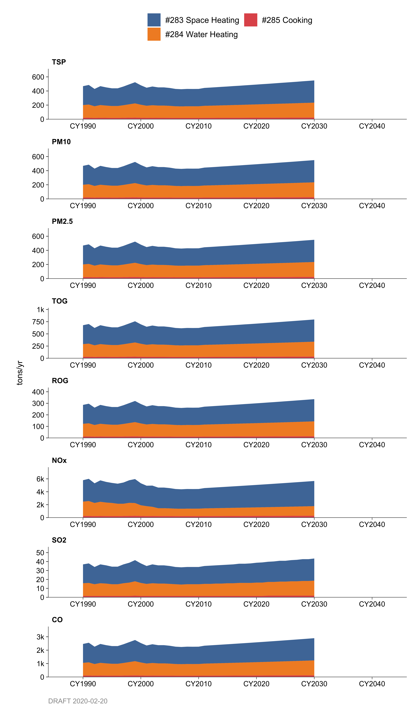
Historical emission trends are based on natural gas usage in the San Francisco Bay Area.
Growth
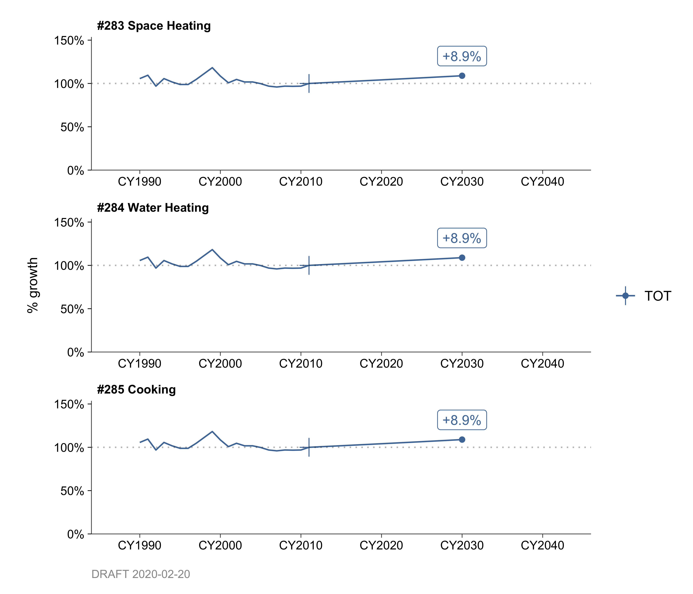
Emission growth projections are based on household population growth in combination with CEC’s forecasts for residential sector natural gas demand. Household population data was obtained from two sources, the Association of Bay Area Government’s (ABAG’s) 2009 “Projections” reports and the California Statistical Abstracts.
Control
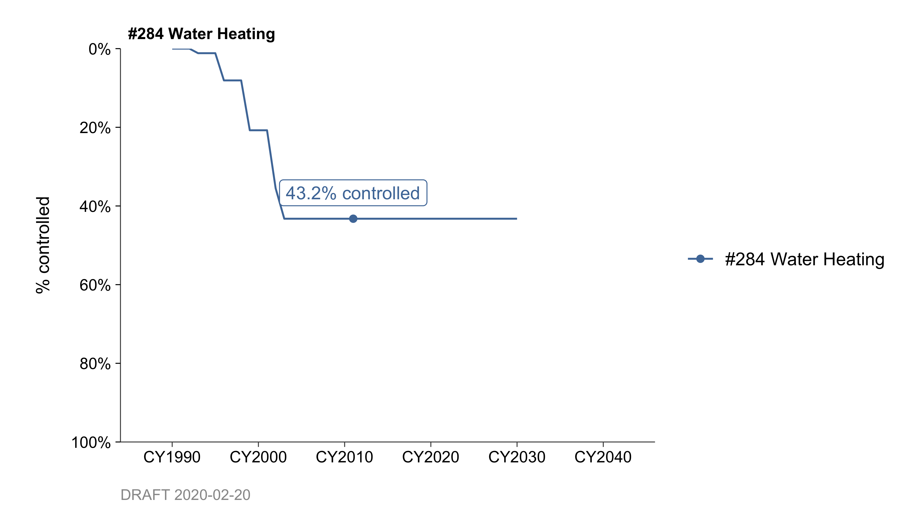
The District adopted Regulation 9; Rule 6 on April 1, 1992 to control the amount of NOx emissions from natural gas fired water heaters. This rule has a control of 46% with a rule effectiveness of 94% reached by the year 2002.
By: Sukarn Claire Date: January 2014 Base Year: 2011
7.2 Domestic Fuel, LPG & Liquid Fuel
7.2.1 Emissions
Introduction
This category contains emissions from domestic fuel combustion of LPG and distillate oil.
Methodology
Emissions estimates from domestic LPG and distillate oil combustion are based on the “BTU equivalent - natural gas approach”. This approach follows an ARB methodology as given in a document titled, “Methods for Assessing Area Source Emissions in California”, Section 5-3. The approach is based upon, namely:
Number of housing units heated by LPG and distillate oil as provided by the 2010 Department of Finance’s Census of Population and Housing.
Bay Area natural gas fuel usage as provided by Pacific Gas and Electric Company.
Natural gas usage conversion to average BTUs per household.
Estimation of LPG and distillate oil usage based on average BTUs per household.
Calculation of LPG and distillate oil emissions.
Greenhouse gas emission factors are obtained from the U.S. Department of Energy’s (DOE’s), Energy Information Administration (EIA).
Monthly Variation
The monthly variation for LPG and distillate oil was based on data provided by PG&E Customer Accounting Department. This data details domestic natural gas usage by number of customers (dwelling units) in each county. For all counties except Solano and Sonoma, data sets reflecting the entire counties were used in the calculation. For Solano and Sonoma Counties that are both partially in the District, only data for cities within the District were used. For Solano County, data sets used were for Benicia, Fairfield, Suisun and Vallejo. For Sonoma County, data sets used were for Cotati, Petaluma, Rohnert Park, Santa Rosa, Sebastopol and Sonoma.
County Distribution
County distribution of emissions was based on the Department of Commerce’s 2010 Census of Population and Housing for California. In that report, the number of homes using LPG and fuel oil as a heating medium were used in the estimate of county distribution.
7.2.2 Trends
Historical
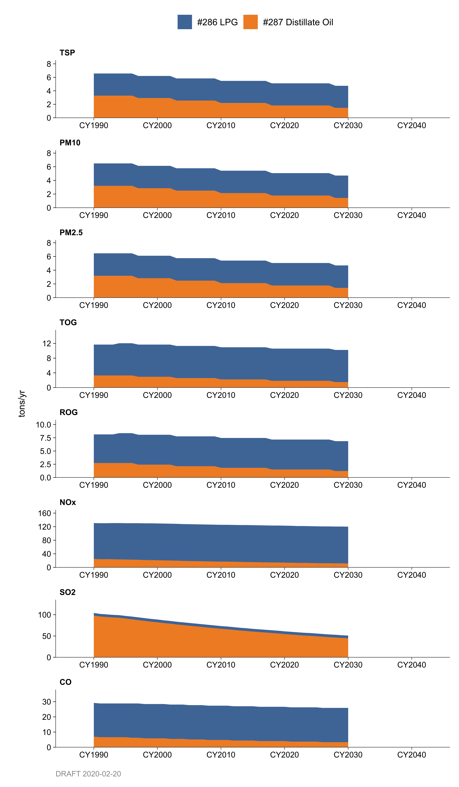
Growth
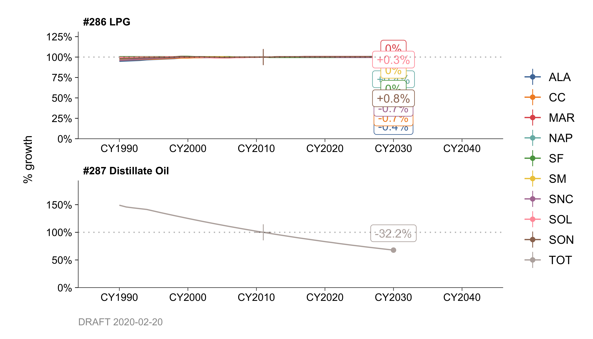
For Category 286 (Fuel Combustion, Stationary Sources, Domestic LPG), an assumption was made that annual emissions, over the years, would tend to follow household population data. Population data used in the projection was based on the Association of Bay Area Government’s (ABAG’s) 2009 “Projections” report. For Category 287 (Fuel Combustion, Stationary Sources, Domestic Distillate Oil), the growth was assumed to be diminished as the fuel would eventually be phased out in favor of natural gas. A 2% reduction per year was chosen, starting in 1992.
By: Tan Dinh Date: January 2014 Base Year: 2011
7.3 Domestic Solid Fuel (Wood)
7.3.1 Emissions
Introduction
This methodology is used to estimate the criteria pollutant emissions from residential wood combustion, namely from fireplace and woodstove. Fireplaces are the most commonly utilized wood burning device in a home. They are used primarily for supplemental heating and for aesthetic appeal. Fireplace combustion is characterized by high air-to-fuel ratios and burn rates. Traditional masonry fireplaces typically contain large open fireboxes without combustion air controls and are not highly efficient heating devices. A net heat loss may occur in a residence if colder, outside air is drawn in to replace the inside air used for combustion and lost through the chimney draft. There are also prefabricated (metal) fireplaces which are slightly higher in energy efficiency than masonry fireplaces. Fireplace inserts that fit into the fireplace can increase the heating efficiency by either radiating the heat into the house or venting heated air into the house by air circulating around the insert with the help of a fan.
Woodstoves are used primarily as domestic space heaters and have enclosed fireboxes and dampers to reduce air-to-fuel ratios and burn rates. Since they are stand-alone heating devices, the greater surface area radiates more heat than a fireplace.
The emissions from residential fireplaces and woodstoves are highly variable, depending on the amount of wood burned and the types of woodstoves and fireplaces being used for burning wood. Many assumptions were made with the realization that any variations in one or more of these variables would substantially change the calculations.
Methodologies
The emission estimates for woodstoves and fireplaces were derived from BAAQMD’s wood burning survey performed between winter of 2005 and spring of 2006. This survey was performed by True North Research. Data collected from this survey includes wood burning activities via frequency, fuel type, and quantity for the Bay Area nine counties. A compilation and analysis of this data was performed by Dr. David Fairley, BAAQMD’s statistician, in a report entitled “Revised Estimates of Wood Burning in the San Francisco Bay Area Based on Telephone Survey Data”. Statistical estimation methods were used in this report to derive the annual and seasonal amount of wood burned by county. Throughputs were also derived based on data obtained from the survey. A density of 5 lbs per unit of log was assumed in the calculation. Wood stove and fire place emission factors were based on data obtained from ARB and EIIP volume IV. Composite emission factors were calculated for wood stove criteria pollutants based on an average of conventional and EPA phase II wood stove emission factors. The number of conventional versus EPA phase II wood stoves were derived based on a statistical analysis from the 05-06’ winter survey.
In addition to criteria pollutant emission, greenhouse gases for wood smoke are also reported in the emission inventory. Wood smoke carbon dioxide emissions are considered to be biogenic emissions. Biogenic Carbon Dioxide (Bio-CO2) emissions are a subset of total CO2 emissions which are emitted from materials that are derived from living cells, excluding fossil fuels, limestone and other materials that have been transformed by geological processes. Bio-CO2 originates from carbon that is present in materials such as wood, paper, vegetable oils and food, animal, and yard waste. Wood smoke greenhouse gas emission factors are obtained from the Department of Energy’s (DOE’s), Energy Information Administration (EIA).
Monthly Variation
The monthly variation for wood burning in woodstoves and fireplaces was also derived from Bay Area’s 2005-2006 telephone survey on wood burning. Monthly variation was estimated based on sample weights assigned from the data analysis. The estimates were appropriately adjusted for county population.
County Distribution
There were wide county differences in the amounts of wood burned. For fireplaces, the more urban counties – Alameda, San Francisco and San Mateo – tend to have lower amounts burned per household than counties in more rural parts such as Sonoma and Napa counties. However, because of the large populations, Alameda, Contra Costa and Santa Clara were estimated to contain the largest quantity of logs burned per area. For wood stoves, Sonoma, Marin and Napa have the largest household number of logs burned per household but, again because of population, the largest number of logs burned in wood stoves per area was found in Contra Costa and Santa Clara counties.
7.3.2 Trends
Historical
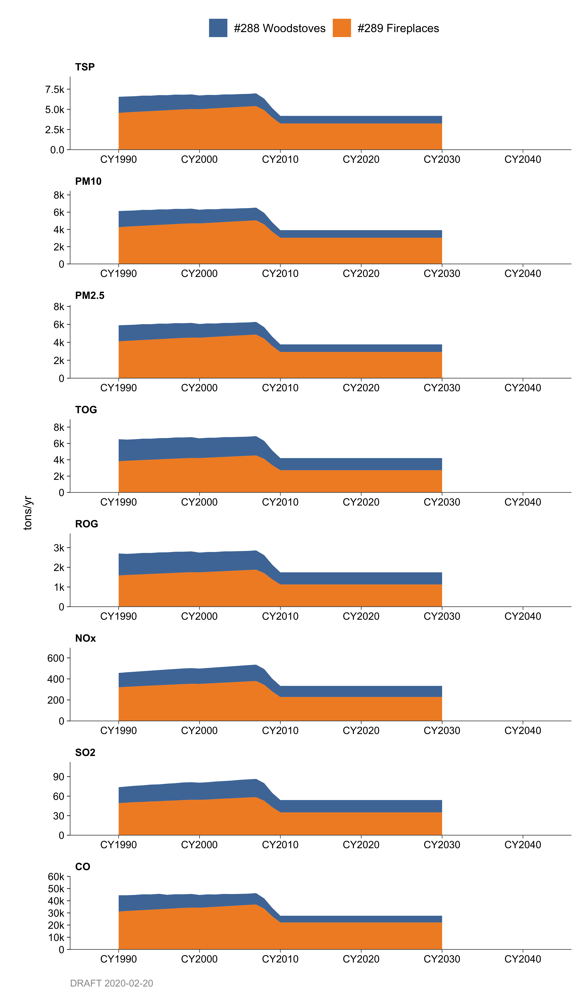
Growth
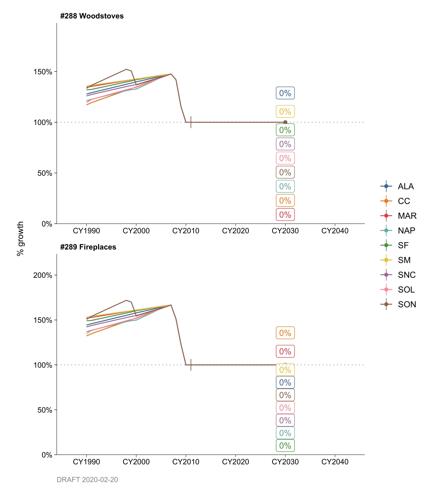
Future projections of emissions are based on household growth in the Bay Area from 2009 “Projections” report published by ABAG.
Control
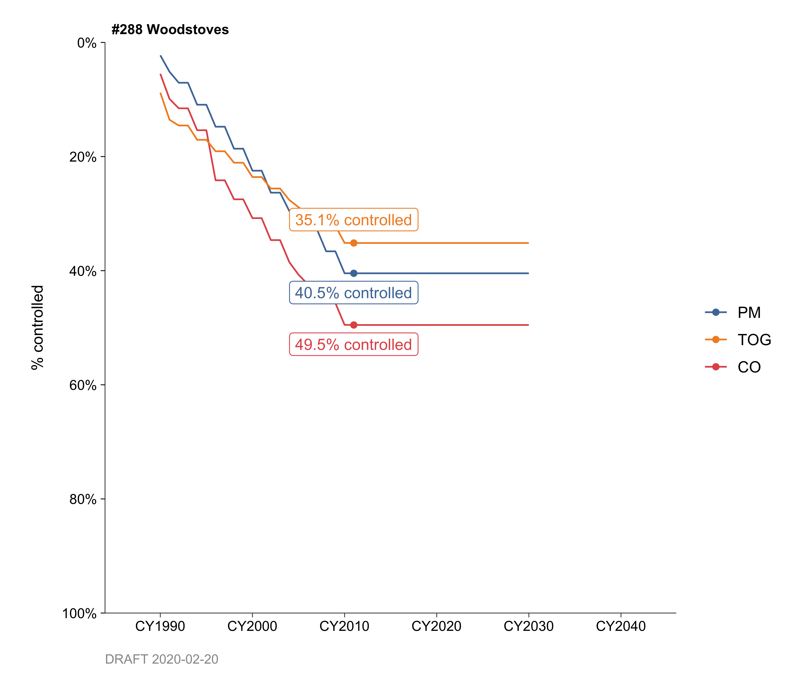
Control of residential wood combustion currently falls under EPA’s Standards of Performance for New Stationary Sources (NSPS) for residential wood heater (stoves). (This is adopted by reference in the District Regulation 10.) The NSPS required that new residential heaters manufactured on or after July 1, 1988, or sold on or after July 1, 1990 be certified to meet particulate emission standards of 5.5 grams per hour for catalytic wood heaters and 8.8 grams per hour for non-catalytic wood heaters. These are known as Phase I stoves. More restrictive particulate emission standards were set for stoves manufactured on or after July 1, 1990 or sold after July 1, 1992. For catalytic wood heaters this was 4.1 grams per hour and for non-catalytic wood heater this was 7.5 grams per hour. These are known as Phase II stoves. Although EPA has only set emission limits for particulate matter, emission of reactive organic compounds and carbon monoxide are expected to be limited as well.
Natural gas fireplaces, pellet fueled wood stoves, and EPA-certified woodstoves and fireplaces are increasing in popularity every year. Particulate emissions from these heating devices are insignificant. Some cities and counties in the Bay Area have (or are looking at) enacting new ordinances restricting new wood stove and fireplaces to these low particulate emitting heating devices.
In July 2008, the District enacted a rule (Regulation 6, Rule 3) to control emissions from wood-burning devices. This rule limits emissions of particulate matter (PM) and visible emissions (VE) from wood-burning devices, including any wood-burning device, pellet- fueled wood heater or any indoor permanently-installed device burning any solid fuel for aesthetic or space-heating purposes which includes fireplaces. The rule will help to reduce PM emissions from the burning of wood in woodstoves and fireplaces.
By: Tan Dinh Date: January 2014 Base Year: 2011
7.4 Cogeneration
7.4.1 Emissions
Introduction
These stationary combustion categories (290, 291 and 292) account for criteria pollutant (particulate, organic, NOx, SOx, and CO) and greenhouse gas emissions (CO2, CH4, and N2O) from boilers, turbines, and reciprocating engines at cogeneration plants in the San Francisco Bay Area. Cogeneration plants are located at many sites in the Bay Area, including oil, chemical and food processing companies, municipal utility companies, hospitals, and military bases etc.
Cogeneration plant is a power station that simultaneously generates both electricity and useful heat by utilizing one primary fuel.
Modern, highly efficient power plants use the gas turbine Combined Cycle (CC). The combined-cycle gas turbine power plant consists of one or more gas turbines equipped with heat recovery steam generators to capture heat from the gas turbine exhaust. Steam produced in the heat recovery steam generators powers a steam turbine generator to produce additional electric power. Use of the otherwise wasted heat in the turbine exhaust gas results in high thermal efficiency compared to other combustion based technologies. Combined-cycle plants currently entering service can convert about 50 percent of the chemical energy of natural gas into electricity. Additional efficiency can be gained in combined heat and power (CHP) applications (cogeneration), by bleeding steam from the steam generator, steam turbine or turbine exhaust to serve direct thermal loads, such as food and chemical processing.
Methodology
Emissions for these categories were obtained from point source data only, as contained in the District’s data bank. The District updates the data each year on a source-by-source basis using as input:
Process material throughputs as reported by the plants
Emissions factors (these may be source specific factors reported by the plants through source test results or applicable general factors, i.e. from the U.S. Environmental Protection Agency (EPA))
Emissions control factors (device-specific or general - these may be supplied by the plants also)
Information on these specific cogeneration sources allowed them to be identified as boilers, turbines or reciprocating engines. Some of these sources may be of the “dual fuel” type, i.e., they are able to combust either gaseous or liquid fuel. EPA’s document AP-42 contains emissions information on these types of sources.
The fuel specific greenhouse gas emission coefficients for these categories were obtained from the U.S. Department of Energy’s (DOE’s) Energy Information Administration (EIA), the U.S. Environmental Protection Agency’s (EPA’s) document AP-42, and the California Energy Commission (CEC).
County Distribution
The Bay Area Air District’s point source database contains county distribution information for each facility based on its location.
Monthly Variation
Monthly variation of emissions is based on the company reported quarterly throughput/ activity data.
7.4.2 Trends
Historical
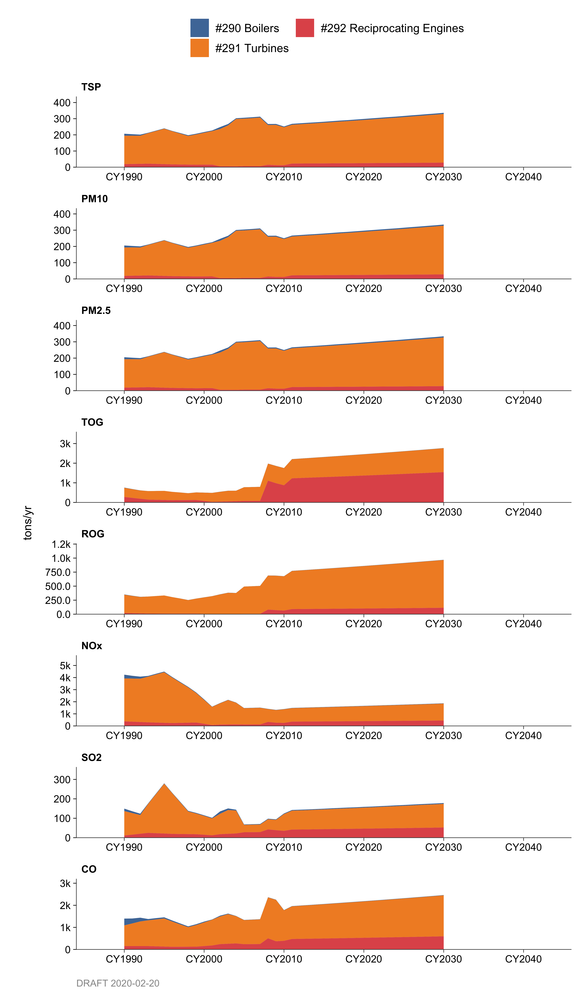
Historical emissions have varied with fuel usage activity. Prior to Base Year 1987, these three categories were grouped as one category.
Growth
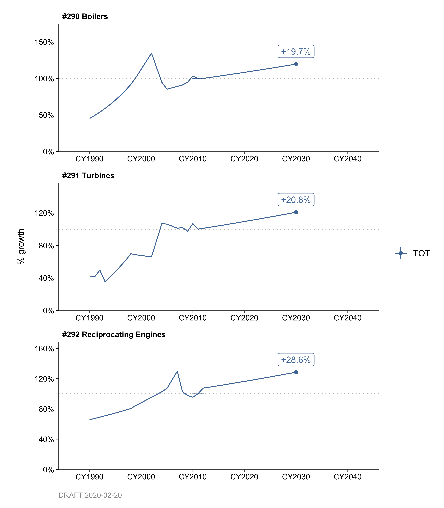
Projections for categories 290, 291, and 292 were developed based on the following methods in combination with the CEC’s forecasts for the combined heat and power generation demand.
For Category #290 (boilers), it was assumed that annual emissions, over the years, would tend to follow two components: retail trade industry employment and services industry employment. As such, the annual variation ratio value was developed as a hybrid, based on 50% of the retail trade industry employment value and 50% of the services industry employment value.
For Category #291 (turbines), it was assumed that annual emissions, over the years, would tend to follow two components: manufacturing industry employment and population within the District jurisdiction. As such, the annual variation ratio value was developed as a hybrid, based on 50% of the manufacturing industry employment value and 50% of the population value.
For Category #292 (reciprocating engines), it was assumed that emissions over the future years would tend to follow population growth.
The employment and population data used were obtained from two sources, the Association of Bay Area Government’s (ABAG’s) 2009 “Projections” reports and the California Statistical Abstracts.
Control
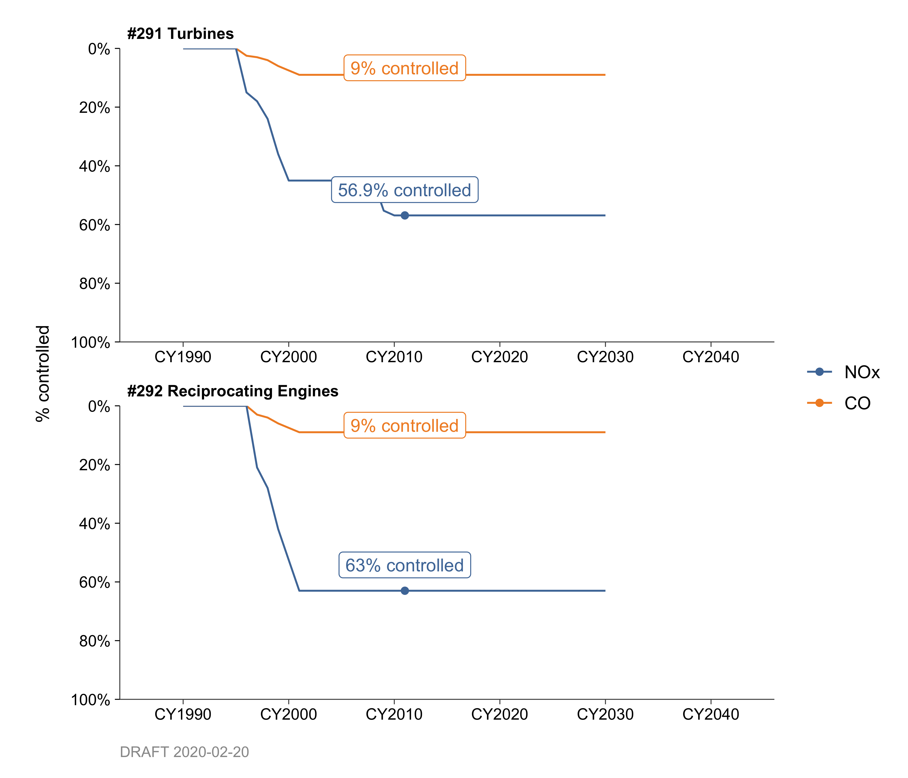
District Regulation 9, Rules 8 and 9 control NOx and SOx emissions from the internal combustion of fuels in engines and turbines, respectively.
By: Sukarn Claire Date: January 2014 Base Year: 2011
7.5 Power Plants - Gas/Oil Boilers
7.5.1 Emissions
Introduction
Categories 293 and 294 estimate criteria pollutant (particulate, organic, NOx, SOx, and CO) and greenhouse gas emissions (CO2, CH4, and N2O) from gas and oil fired boilers at the steam turbine power plants in the San Francisco Bay Area. All of the large steam turbine/boiler type electric power plants are located in San Francisco and Contra Costa counties.
A power generation plant which converts heat energy of fuel combustion into electrical energy by utilizing a steam turbine and alternator, is known as a steam turbine power plant. Steam is produced in the boiler by combusting fuel. The steam is then expanded in the turbine to spin the steam turbine. The steam turbine drives the alternator which converts mechanical energy of the turbine into electrical energy.
Emissions from the gas and oil fired turbines at power plants are contained in Categories 1595 and 297.
Methodology
Emissions for these categories were obtained from point source data only, as found in the District’s data bank. Some of the boilers are of the “dual fuel” type, i.e.; they can either use natural gas (N.G.) or fuel oil. Presently only natural gas is used at the steam turbine/boiler type power plants. The Nitrogen Oxide (NOx) emission rates for the large steam power plants in the Bay Area have decreased over the years (from emission rate of about 0.15 lb. / MM BTU in 1990 to about 0.057 lb/ MM BTU in 2002).
The District updates the data each year on a source-by-source basis using as input:
Process material throughputs as reported by the power plants (this data is routinely updated)
Emissions factors (these may be source specific as reported by the facility or general factors, i.e. from the Environmental Protection Agency (EPA))
Emission control factors (device-specific or general - these may be supplied by the power plants also)
Information on the specific sources allowed them to be identified as gas fired or oil fired boilers. Many of these sources may be of the “dual fuel” type, i.e., they are able to combust either gaseous or liquid fuel. EPA’s document AP-42 contains emissions information on these types of sources. The fuel specific greenhouse gas emission coefficients for these categories were obtained from the U.S. Department of Energy’s (DOE’s) Energy Information Administration (EIA), the U.S. Environmental Protection Agency’s (EPA’s) document AP-42, and the California Energy Commission (CEC).
County Distribution
The District point source database contains county distribution information for each facility based on its location.
Monthly Variation
Monthly variation of emissions is based on company reported quarterly throughput/activity data.
7.5.2 Trends
Historical
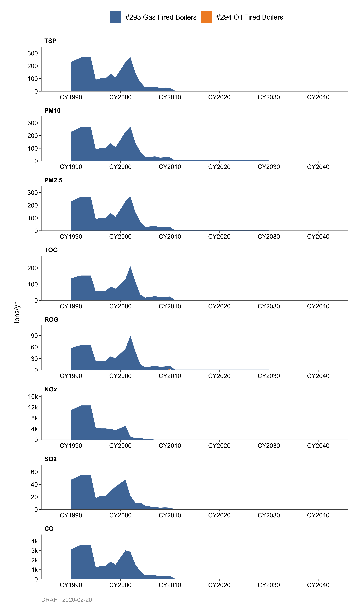
NOx emissions from 1980 through 2002 were based on actual fuel usage data provided by power plants operating in the Bay Area. Emissions over the years have fluctuated by a factor of about 2.5 based on external factors, such as amount of rainfall and the availability of low cost hydroelectric power during that year. The NOx emissions have varied from over 30 tons/day to as low as 10 tons/day.
The fuel oil usage at the power plants has been decreasing over the years. Since 1996, electric utility power plants have been prohibited from burning fuel oil by District Regulation 9, Rule 11, except for emergency situations. The Bay Area boiler/steam turbine type power plant NOx emissions have decreased from historical (e.g., 1994) levels of over 30 ton/day to about 1 ton/day in 2007. This was due to shutting down of the older inefficient boilers and the stringent Best Available Retrofit Control (BARCT) requirements of Regulation 9-11 for existing utility power plants (0.057 Lb/MMBTU or 48 ppm in 2003, 0.018 lb/MMBTU or 15 ppm in 2005) and the Best Available Control (BACT) requirements of Regulation 2-2 for new power plants (0.0089 lb/MMBTU or 7.5 ppm). NOx emission concentrations are given in ppm by volume, dry basis at 15% O2.
Growth
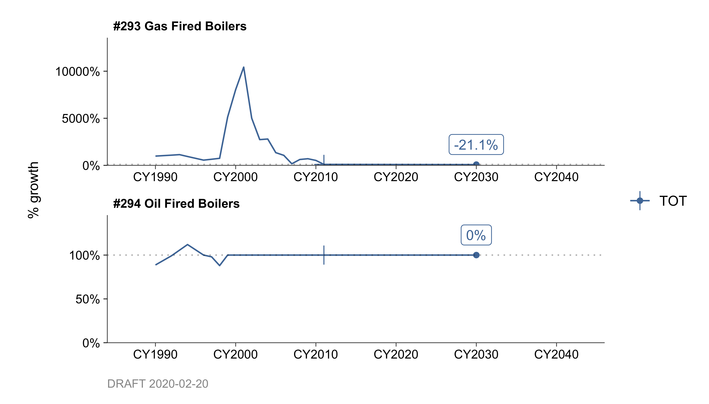
Emission projections were developed based on the electric power generation fuel usage forecasts by the California Energy Commission (CEC).
Control
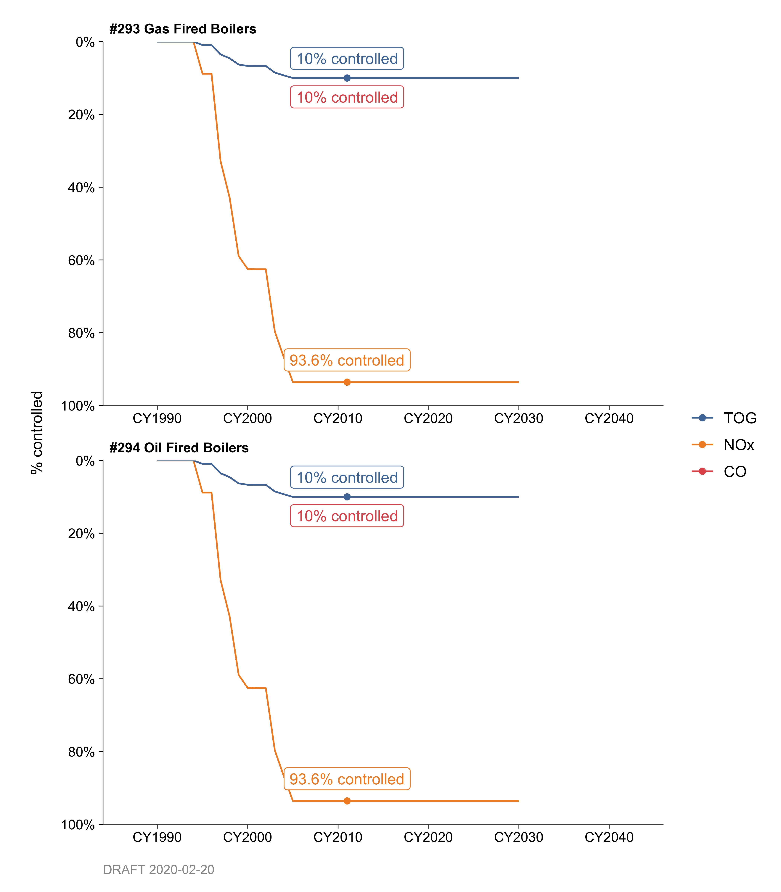
As noted above, District Regulation 9-11 and 2-2 control NOx and CO emissions from fuel combustion in boilers at electric power plants in the Bay Area.
By: Sukarn Claire Date: January 2014 Base Year: 2011
7.6 Power Plants: Gas/Oil Turbines
7.6.1 Emissions
Introduction
Categories 297 and 1595 account for criteria pollutant (particulate, organic, NOx, SOx, and CO) and greenhouse gas emissions (CO2, CH4, and N2O) from oil and gas fired turbines at the electric power plants in the San Francisco Bay Area.
Modern, highly efficient power plants use the gas turbine Combined Cycle (CC). A combined-cycle gas turbine power plant consists of one or more gas turbines equipped with heat recovery steam generators to capture heat from the gas turbine exhaust. Steam produced in the heat recovery steam generators powers a steam turbine generator to produce additional electric power. Use of the otherwise wasted heat in the turbine exhaust gas results in high thermal efficiency compared to other combustion based technologies. Combined-cycle plants currently entering service can convert about 50 percent of the chemical energy of natural gas into electricity. Additional efficiency can be gained in combined heat and power (CHP) applications (cogeneration), by bleeding steam from the steam generator, steam turbine or turbine exhaust to serve direct thermal loads, such as food and chemical processing.
Category 1596 contains estimates of fugitive emissions of Sulfur Hexafluoride (SF6) from power transmission and distribution system in the Bay Area. SF6 is an inorganic very potent greenhouse gas. SF6 is used in the electrical industry as a gaseous dielectric medium for high-voltage circuit breakers, switchgear, and other electrical equipment. SF6 gas has a much higher dielectric strength than air or dry nitrogen that makes it possible to significantly reduce the size of electrical gear.
Indirect greenhouse gas emission estimates from electricity imports to the Bay Area are accounted for in Category 1597. Emissions from gas and oil fired steam turbine/boiler type electric power plants are covered in Categories 293 and 294.
Methodology
Emissions for Categories 297 and 1595 were obtained from point source data only, as found in the Air District’s data bank.
The District updates the data each year on a source-by-source basis using as input:
Process material throughputs as reported by the power plants (this data is routinely updated)
Emissions factors (these may be source specific as reported by the facility or general factors, i.e. from the Environmental Protection Agency (EPA)
Emission control factors (device-specific or general - these may be supplied by the power plants also)
Emissions originate from turbines at various power plants and other facilities in the Bay Area. Many of these turbines are of the “dual fuel” type, i.e., they are able to combust either natural gas or fuel oil. Specific information on these sources allowed them to be identified as either gas or oil fired sources. The EPA’s document AP-42 contains this information on dual fuel combustion turbines and engines.
The fuel specific greenhouse gas (GHG) emission coefficients for these categories were obtained from the U.S. Department of Energy’s (DOE’s) Energy Information Administration (EIA), the U.S. Environmental Protection Agency’s (EPA’s) document AP-42, and the California Energy Commission (CEC).
The SF6 emissions for Category 1596 were based on PG&E’s Service Area total fugitive SF6 emissions. The SF6 emissions were apportioned to the Bay Area based on the Bay Area population as compared to total PG&E Service Area population. Indirect GHG emissions from electricity imported to the Bay Area (Category 1597) were estimated based on total power consumption to power generated locally in the Bay Area. It is estimated that about one fourth to one third of electricity used in the Bay Area is imported from sources outside of the Bay Area. The emission factors (lb. /MWh) used in estimating emissions were in accordance with the PG&E data.
County Distribution
The District point source database contains county distribution information for each facility for Category 297 and 1595. County distribution for Category 1596 and 1597 is based on population and power consumption, respectively.
Monthly Variation
Monthly variation of emissions is based on company reported quarterly throughput data for C297 and C1595. Uniform activity is assumed for C1596 and C1597.
7.6.2 Trends
History
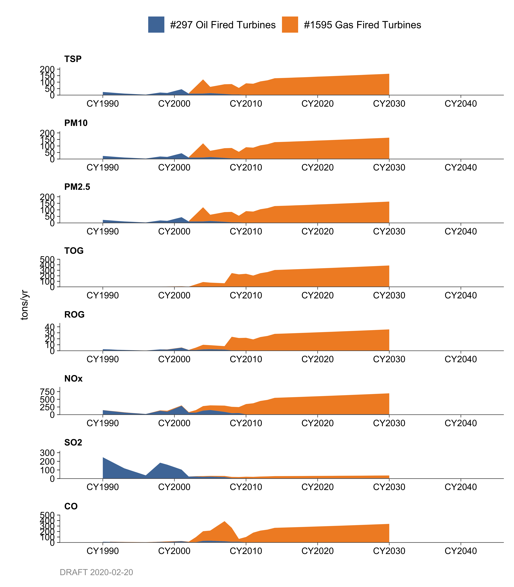
Category 297 emissions prior to 1987 were derived from Base Year 1983 trend values. Historical emissions have varied with fuel usage activity. Emission projections for base years prior to 1996 were developed from natural gas and fuel oil usage estimates provided to the District by PG&E.
Growth
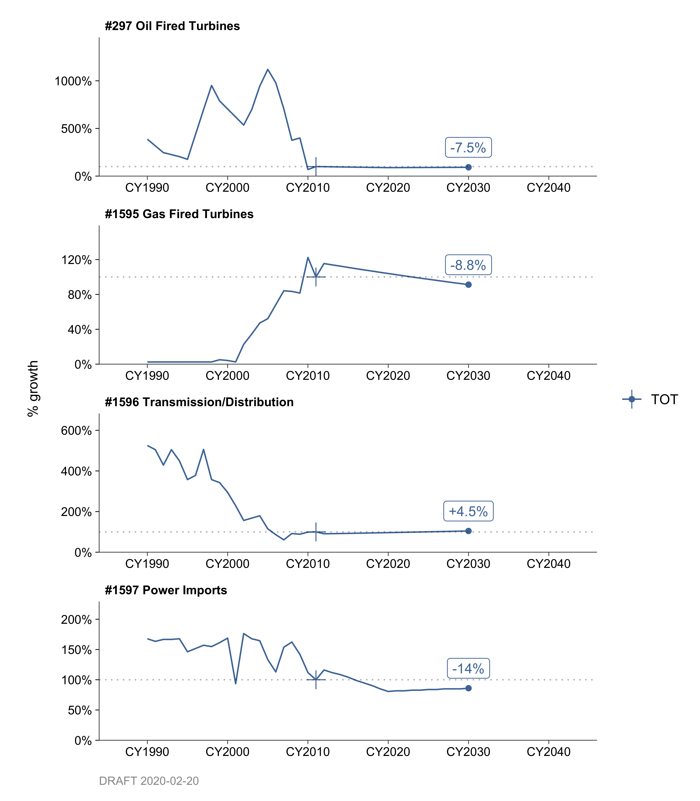
Category 297 emissions projections for this base year were developed based on the electric power generation forecast by the California Energy Commission (CEC). In the long term, fuel oil usage is projected to be small.
Category 1595 emission projections were developed based on the electric power generation fuel usage forecast by the California Energy Commission (CEC).
Category 1596 emissions are not expected to grow so much as utilities have enrolled in voluntary SF6 emission reduction programs.
Category 1597 emissions are expected to grow in accordance with CEC’s power consumption projections.
Control
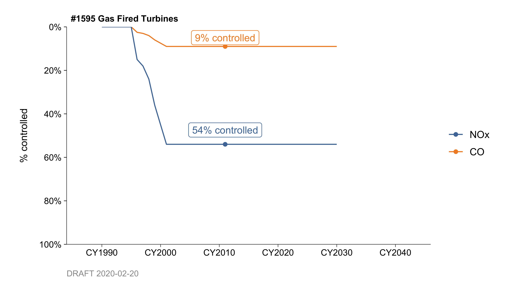
The Bay Area Air District Regulation 9, Rule 9 controls NOx and CO emissions from fuel combustion in gas turbines.
By: Sukarn Claire Date: January 2014 Base Year: 2011
7.7 Oil Refineries - External Combustion
7.7.1 Emissions
Introduction
These categories contain emissions from oil refinery external combustion sources.
Methodologies
Emissions for these categories were obtained from point source data as found in the District’s Data Bank System. Each year, the District collects and records the data from individual refinery plants via a permitting process. The data is recorded using the following as inputs:
Process material throughputs (as reported by the plants, this data is routinely updated)
Emissions factors (these may be source specific as reported by the plants or general factors, i.e. from the EPA)
Emissions control factors (device-specific or general - these may be supplied by the plants also)
Emission information from numerous sources is grouped into the above mentioned categories. EPA’s AP-42, Chapter 5 contains description of petroleum refining processes and emission factors. Criteria pollutants and greenhouse gas emissions, including carbon dioxide (CO2), methane (CH4), and nitrous oxide (N2O), are produced during refining processes. Since refinery emissions are part of point sources, criteria pollutants as well as greenhouse gas data are obtained from the refinery plant as part of the Bay Area Air District permit renewal process.
The county, month, and day factors were derived based on information gather from a plant’s location, seasonal usage, and daily operation as found in the District’ Databank System.
7.7.2 Trends
Historical
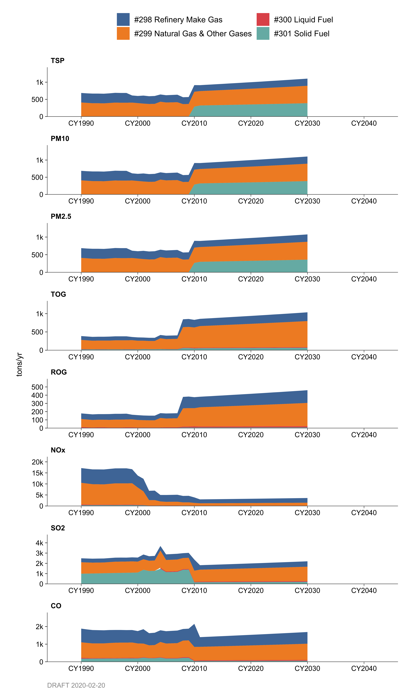
Emissions prior to 1987 were derived from Base Year 1983 trend values. Past base year historical emissions include interchangeable emission reduction credits (IERC) which were part of category 10. IERC banking emissions are now inventoried under categories 298-300. Also, flare source emissions from categories 298 and 299 are now accounted for in category 15.
Growth

Projected growth for all refinery related categories was taken from the California Energy Commission report on California’s Petroleum Infrastructure (2011) that predicted California refiners expand distillation capacity to remain relatively flat. This is due to increase in fuel efficiency of vehicles from CAFÉ standards as well as steady transition to alternative fuels in the California market. California refiners have recently added and will continue to add more process units to produce reformulated gasoline. However, no large increases in emissions are expected from these units.
Control
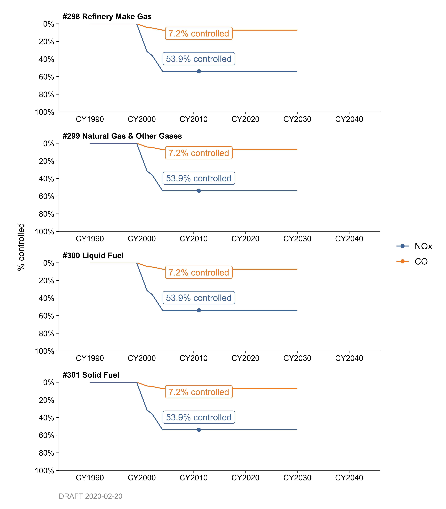
Regulation 9-10 controls emissions of NOx due to external combustion. Significant reduction in NOx emissions was observed between the period from year 2000 to 2004 for refinery external combustion operations as a result of this rule.
By: Tan Dinh Date: January 2014 Base Year: 2011
7.8 Reciprocating Engines
7.8.1 Emissions
Introduction
Categories 302, 303, and 304 estimate criteria pollutant (particulate, organic, NOx, SOx, and CO) and greenhouse gas emissions (CO2, CH4, and N2O) from reciprocating engines in the San Francisco Bay Area. Category #302 contains reciprocating engines for firewater pumps and standby generators at the oil refineries. Category 303 contains mostly internal combustion engines/electric generators at various companies and utility districts. Category 304 accounts for emissions mostly from diesel fuel engines. Most of the sources in this category are emergency or standby electric generators.
Methodology
Point Sources
Emissions for categories 302, 303, and 304 were obtained from point sources only. The District’s permit requirement for engines was lowered to 50 horse powers or more. As a result, number of engines in the District’s inventory is expected to increase in the future.
The District updates the emissions data each year using as input:
Process material throughputs as reported by the facility
Emissions factors (these may be source specific as reported by the facility or general factors, i.e. from the Environmental Protection Agency (EPA)
Emissions control factors (device-specific or general - these may be supplied by the facility also)
Area Sources
Throughput/activity information for the agriculture irrigation engines (Category 1578) for the Bay Area is in accordance with the California Air Resources Board.
Information on the specific reciprocating engine sources allowed them to be identified as using gasoline, gas fuel or liquid fuel. The EPA’s document AP-42 contains this information on various fuel combusting reciprocating engines. The fuel specific greenhouse gas emission coefficients for these categories were obtained from the U.S. Department of Energy’s (DOE’s) Energy Information Administration (EIA), the U.S. Environmental Protection Agency’s (EPA’s) document AP-42, and the California Energy Commission (CEC).
County Distribution
The District’s point source database contains county distribution information for each facility/source based on its location.
Monthly Variation
Monthly variation of emissions is based on company reported quarterly throughput or activity data.
7.8.2 Trends
History
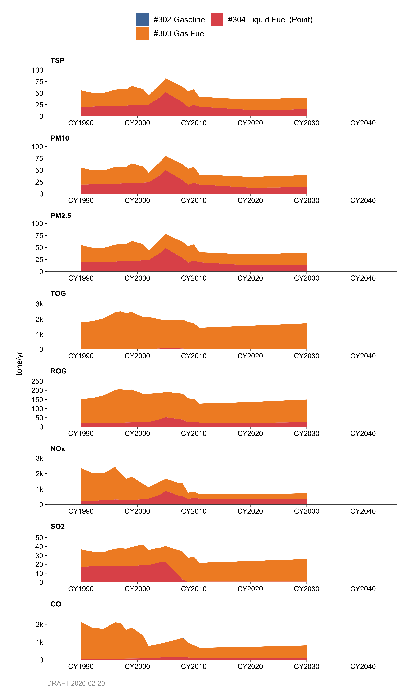
For Category 302, emissions have been extremely low and constant over the past years. Emissions for Categories 303 and 304 have generally varied with fuel usage activity in the San Francisco Bay Area.
Growth
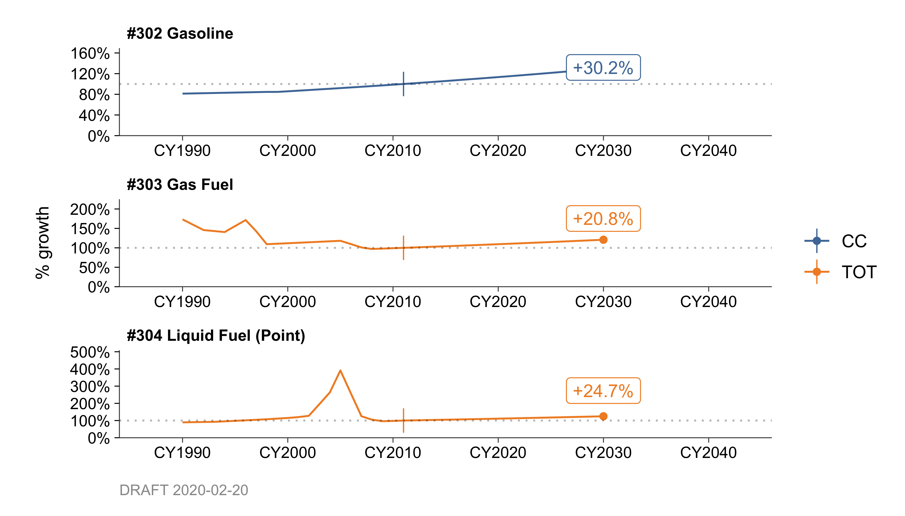
Emissions for Category 302 are assumed to stay fairly constant in future years. For Category 303, it was assumed that annual emissions would tend to follow and be influenced by two components: manufacturing industry employment and population. As such, a growth profile was developed, based on 33.3% of the manufacturing industry employment value and 66.7% of the population value within the District. It is assumed that annual emissions from Category 304 would tend to follow and be influenced in roughly equal amounts by two components: manufacturing industry employment and population. As such, a growth profile was developed, based on 50% of the manufacturing industry employment value and 50% of the population value within the District. Category 1578 projections are based agriculture industry growth in the Bay Area. Projected emissions include expected benefits from ARB’s Air Toxic Control Measure (ATCM). Growth profile data was obtained from two sources, the Association of Bay Area Government’s (ABAG’s) 2009 “Projections” reports and the California Statistical Abstracts.
Control
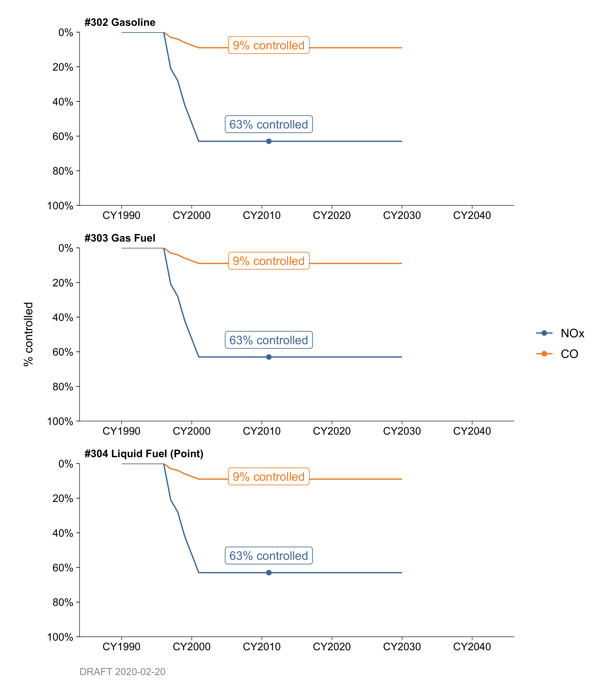
The Air District’s Regulation 9, Rule 8 controls NOx and SOx emissions of fuel combustion in reciprocating engines.
By: Sukarn Claire Date: January 2014 Base Year: 2011
7.9 Back-up Diesel Generator
7.9.1 Emissions
Introduction
Category 1598 and 304 contain emissions from diesel engines used in emergency/standby electric generators. Category 1598 was added to account for additional emissions generated due to the increased use of emergency generators during the electric power shortage crisis in California (2001-2002). Category 304 contains emissions from normal usage of standby generators. These emissions from Category 304 are not covered here.
Methodology
Emissions due to increased emergency generator usage were estimated to be negligible during the electric power shortage crisis in California (2001-2002) and emissions are not expected to grow in the near future. The District collects fuel usage data each year on a source-by-source basis from facilities operating in the Bay Area. Emissions are calculated using fuel usage data and emission factors in the database. Emission and control factors used are either source specific as reported by the plants or general factors, i.e., from the Environmental Protection Agency (EPA); the U.S. Department of Energy’s (DOE’s) Energy Information Administration (EIA); California Energy Commission (CEC) etc.
7.9.2 Trends
History
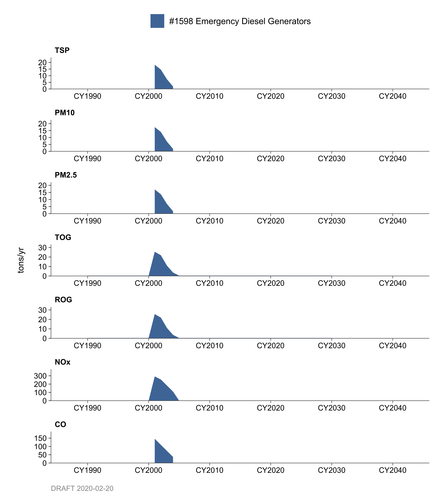
Growth
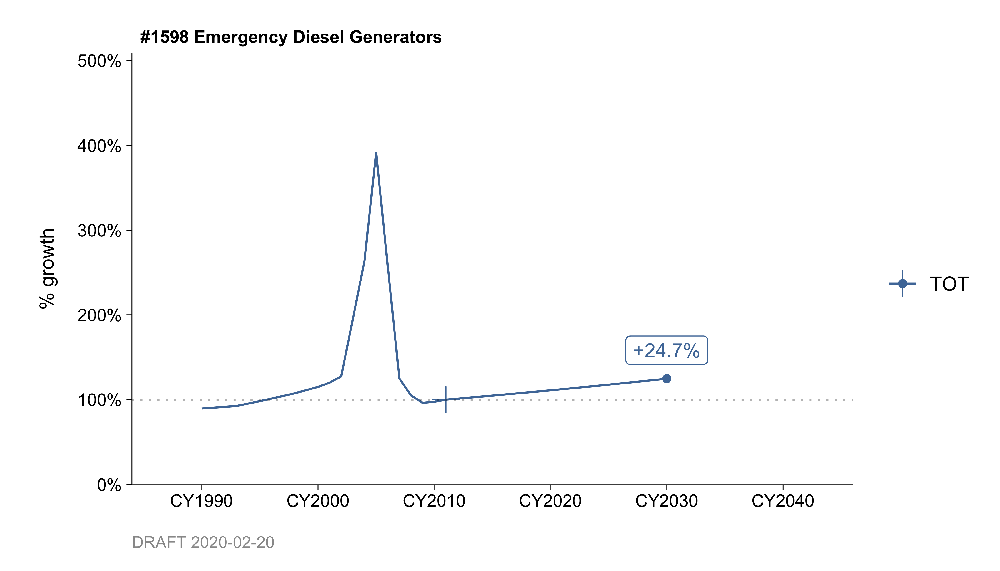
An electric energy crisis in California appears to be over. Emissions from increased usage of standby generators did not appear to materialize as estimated previously.
Control
Regulation 9 controls emissions of NOx and SOx of combustion.
By: Sukarn Claire Date: January 2014 Base Year: 2011
7.10 Turbines
7.10.1 Emissions
Introduction
Categories 305 and 306 account for criteria pollutant (particulate, organic, NOx, SOx, and CO) and greenhouse gas emissions (CO2, CH4, and N2O) from fuel combustion in turbine engines in the San Francisco Bay Area. Category 305 accounts for emission from gas fired turbines and Category 306 from oil fired turbines, respectively.
A combustion turbine is a rotary engine that extracts energy from a flow of combustion gases. It has an upstream compressor coupled to a downstream turbine, and a combustion chamber in-between. The products of the combustion are forced into the turbine section. There, the high velocity and volume of the gas flow is directed through a nozzle over the turbine’s blades, spinning the turbine which powers the compressor and drives their mechanical output.
Methodologies
Emissions for these categories were obtained from point source data as found in the District’s Data Bank System. Each year, the District collects and records the data from individual plants via a permitting process. The data is entered and recorded as follows:
Process material throughput/activity (as reported by the plants, this data is routinely updated)
Emission factors (these may be source specific as reported by the plants or general factors, i.e. from the EPA)
Emission control factors (device-specific or general - these may be supplied by the power plants also)
Specific information on these sources allowed them to be identified as either gas or liquid fuel fired turbines. The EPA’s document AP-42 contains this information on various fuel combusting turbines and engines.
The fuel specific greenhouse gas emission coefficients for these categories were obtained from the U.S. Department of Energy’s (DOE’s) Energy Information Administration (EIA), the U.S. Environmental Protection Agency’s (EPA’s) document AP-42, and the California Energy Commission (CEC).
County Distribution
The District’s point source database contains county distribution information for each facility/source based on its location.
Monthly Variation
Monthly variation of emissions is based on company reported quarterly throughput or activity data.
7.10.2 Trends
History
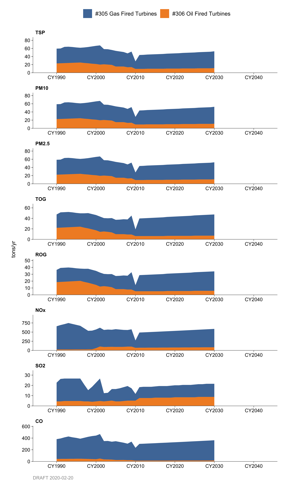
For category #306, it was felt that historical emission trends tend to follow population data. As such, the annual variation ratio value for each year was based on the appropriate population value.
Growth
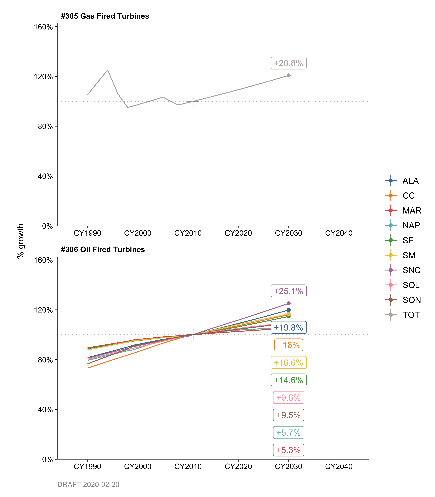
For Category #305, it appeared that sources at oil refineries made the greatest contribution to emissions. Therefore, the emission growth profile for this category is developed in the same manner as the oil refinery external combustion categories. This category is projected to grow at about 1 percent per year.
Growth profile for Category #306 is assumed to follow population growth. The population data was obtained from the Association of Bay Area Government’s (ABAG’s) 2009 projection reports.
Control
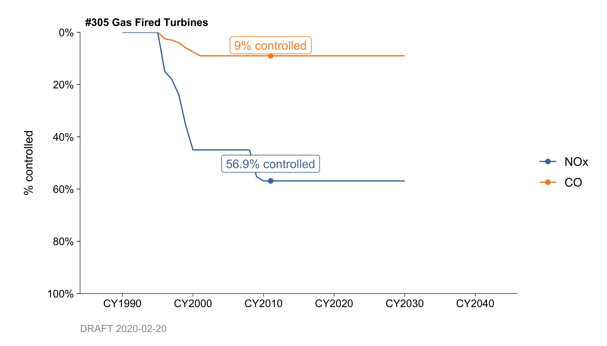
The Air District’s Regulation 9, Rule 9 controls NOx and SOx emissions from fuel combustion in stationary turbines.
By: Sukarn Claire Date: January 2014 Base Year: 2011
7.11 Other External Combustion - Natural Gas
7.11.1 Emissions
Introduction
Categories 307, 968, 1590, and 1591 account for criteria pollutant (particulate, organic, NOx, SOx, and CO) and greenhouse gas emissions (CO2, CH4, and N2O) from natural gas combustion sources.
Categories 307, 1590, and 1591 estimate emissions from sources, such as industrial/commercial/institutional water and steam boilers, furnaces, space heaters, process heaters, pre heaters, ovens and after burners etc.
Category 968 accounts for emissions from the natural gas fired glass melting furnaces at glass manufacturing plants in the Bay Area.
Methodologies
Point source
Emissions for Categories 307 and 968 were obtained from point source data only as found in the District’s data bank. The District updates the data each year on a source-by-source basis using as input:
Process material throughputs as reported by the plants.
Emissions factors (these may be source specific as reported by the plants or general factors, i.e. from the EPA).
Emissions control factors (device-specific or general - these may be supplied by the plants also).
Information on these specific sources allowed them to be identified as boilers, heaters, and furnaces etc. EPA’s document AP-42 contains combustion related emissions information on these sources.
The fuel specific greenhouse gas emission coefficients for these categories were obtained from the U.S. Department of Energy’s (DOE’s) Energy Information Administration (EIA), the U.S. Environmental Protection Agency’s (EPA’s) document AP-42, and the California Energy Commission (CEC).
Area source
Emissions for categories 1590 and 1591 were obtained from the area sources only. Categories 1590 and 1591 contain emissions from industrial and commercial sources, respectively. The area source natural gas usage estimates were developed by obtaining the total point source usage, and then subtracting it from the corresponding combined values for commercial, institutional and industrial natural gas total usage (point + area) in the District, provided by the California Energy Commission (CEC) or PG&E. The computation to develop area source natural gas usage was as follows:
FIXME: INSERT “EQUATION” HERE
Emission factor information for natural gas combustion was obtained from the U.S. Environmental Protection Agency’s (EPA’s) document AP-42, the U.S. Department of Energy’s (DOE’s) Energy Information Administration (EIA) and the California Energy Commission (CEC).
The area source natural gas combustion emission factors in pounds per million cubic feet (Lb/MMCF) are shown below.
| CATEGORY | PART | ORG | NOx | SO2 | CO | CO2 | CH4 | N2O |
|---|---|---|---|---|---|---|---|---|
1590, 1591 |
7.6 | 11 | 98 | 0.6 | 42 | 120,000 | 2.3 | 2.2 |
County Distribution
Categories 307 and 968: The District’s point source database contains county distribution information for each facility based on its location.
Categories 1590 and 1591: County distribution is based on natural gas usage in each of the Bay Area County.
Monthly Variation
For point sources monthly variation of emissions is based on company reported quarterly throughput data. Area source monthly variation is based on average fuel usage by month.
7.11.2 Trends
History
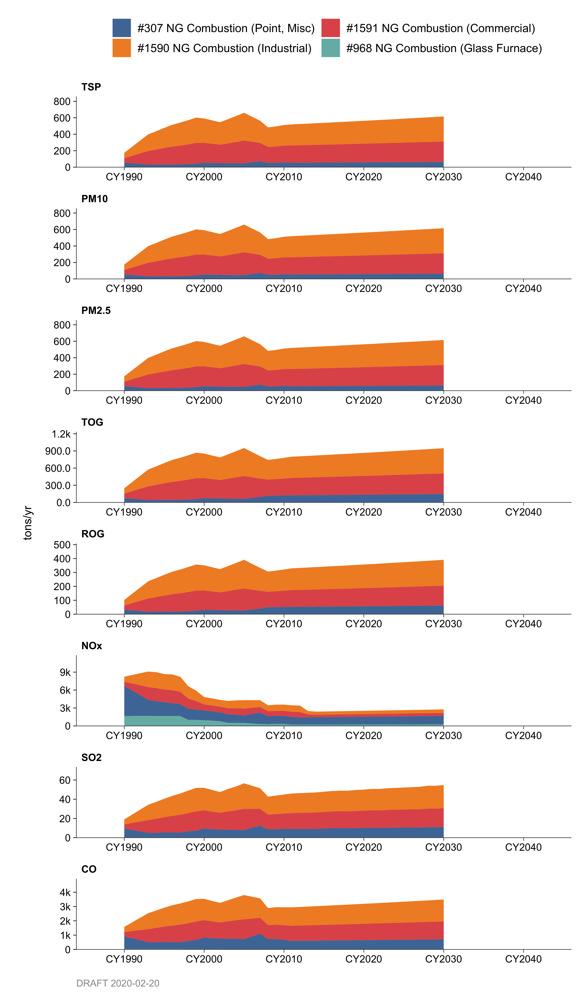
Glass Melting Furnaces, Category 968 was added to the emissions inventory system for base year 1990 after adoption of Regulation 9, Rule 12. Prior to base year 1990, emissions from Glass Melting Furnaces were accounted for in Category 307. For base year 2002, Category 307 was further split into point sources (C307) and area sources (C1590). For base year 2008, Category 1590 was split into Industrial (C1590) and Commercial (C1591) sources.
Prior to base year 1987, category 307 was grouped as four categories: #86, 97, 99 and 111. This change to a single category for all area sources was made due to unavailability of separate natural gas usage data for each category.
Growth
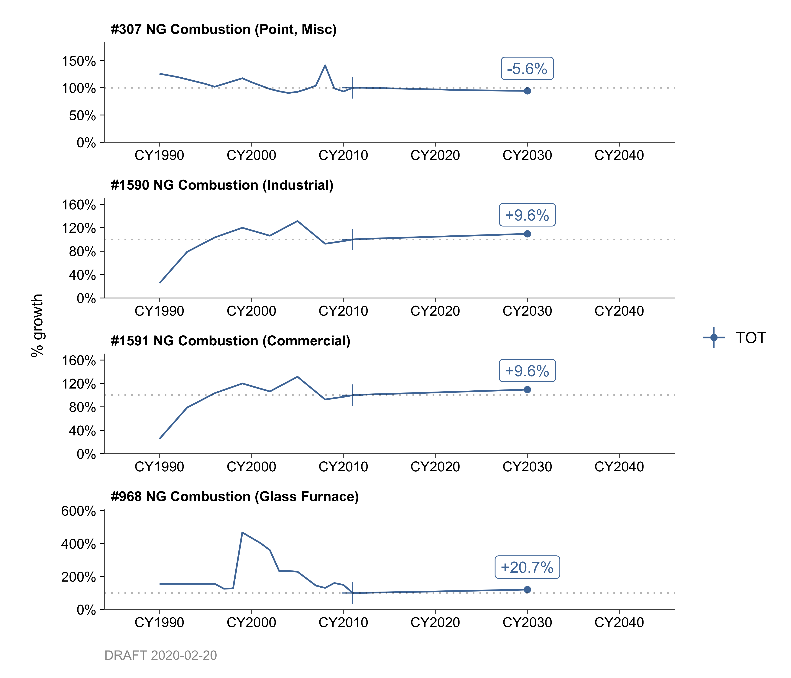
Growth projections for Category 307, 1590 and 1591 are based on the California Energy Commission’s natural gas demand forecasts.
For category 968, it was assumed that annual emissions would tend to follow and be influenced by manufacturing industry employment.
The data used in developing growth profile was obtained from the Association of Bay Area Government’s (ABAG’s) 2009 “Projections” reports.
Control
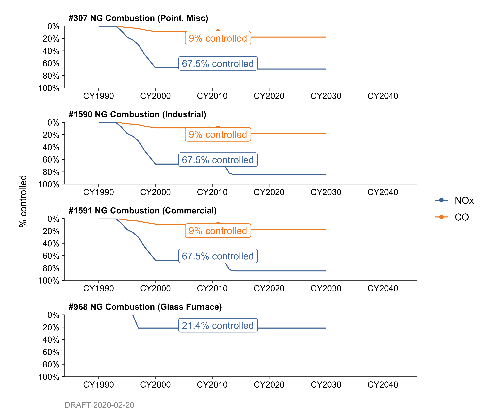
District’s Regulation 9 controls emissions of NOx and CO from combustion.
By: Sukarn Claire Date: January 2014 Base Year: 2011
7.12 Other External Combustion - All Other Fuels
7.12.1 Emissions
Introduction
These categories account for criteria pollutant (particulate, organic, NOx, SOx, and CO) and greenhouse gas emissions (CO2, CH4, and N2O) from external combustion of fuels other than natural gas at industrial facilties in the San Francisco Bay Area. Categories 308, 309, 310, 311, and 312 estimate emissions from external combustion of fuels such as liquefied petroleum gas (LPG), distillate oil, residual oil, coke & coal and other fuels, respectively.
Methodologies
Emissions for these categories were obtained from point source data only, as contained in the District’s data bank. The District updates the data each year on a source-by-source basis using as input:
Process material throughputs as reported by the plants utilizing these fuels for external fuel combustion
Emissions factors (these may be source specific factors reported by the plants through source test results or applicable general factors, i.e. from the EPA)
Emissions control factors (device-specific or general - these may supplied by the plants also)
Information on these specific sources allowed them to be identified as using fuels such as liquefied petroleum gas (LPG), distillate oil, residual oil, coke & coal and other fuels. Environmental Protection Agency’s document AP-42 contains external combustion emission information on these types of sources.
The fuel specific greenhouse gas emission coefficients for these categories were obtained from the U.S. Department of Energy’s (DOE’s) Energy Information Administration (EIA), the U.S. Environmental Protection Agency’s (EPA’s) document AP-42, and the California Energy Commission (CEC).
The county, month, and day factors are obtained from the data bank’s information on each plant’s location, seasonal usage, and days per week of operation.
7.12.2 Trends
History
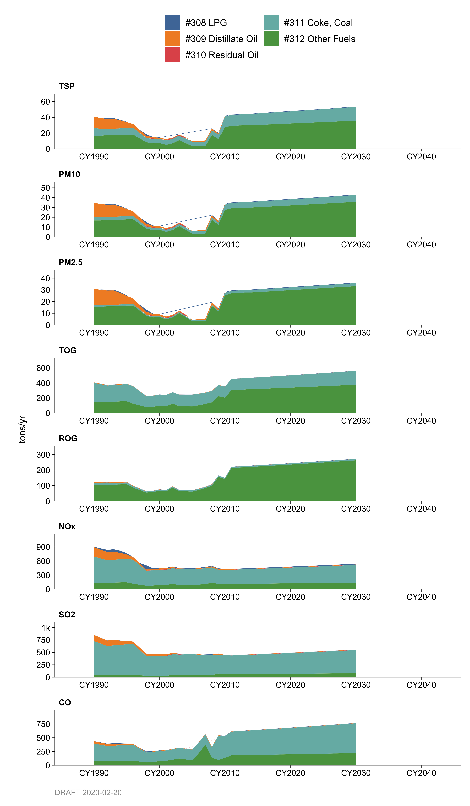
Emissions prior to 1987 were derived from Base Year 1983 trend values. Category 309 had been grouped as four categories before Base Year 1987 and Category 311 had been grouped as two categories. The historical trend values for categories 309 and 311 were summed, respectively, to build the historical emissions data.
Growth
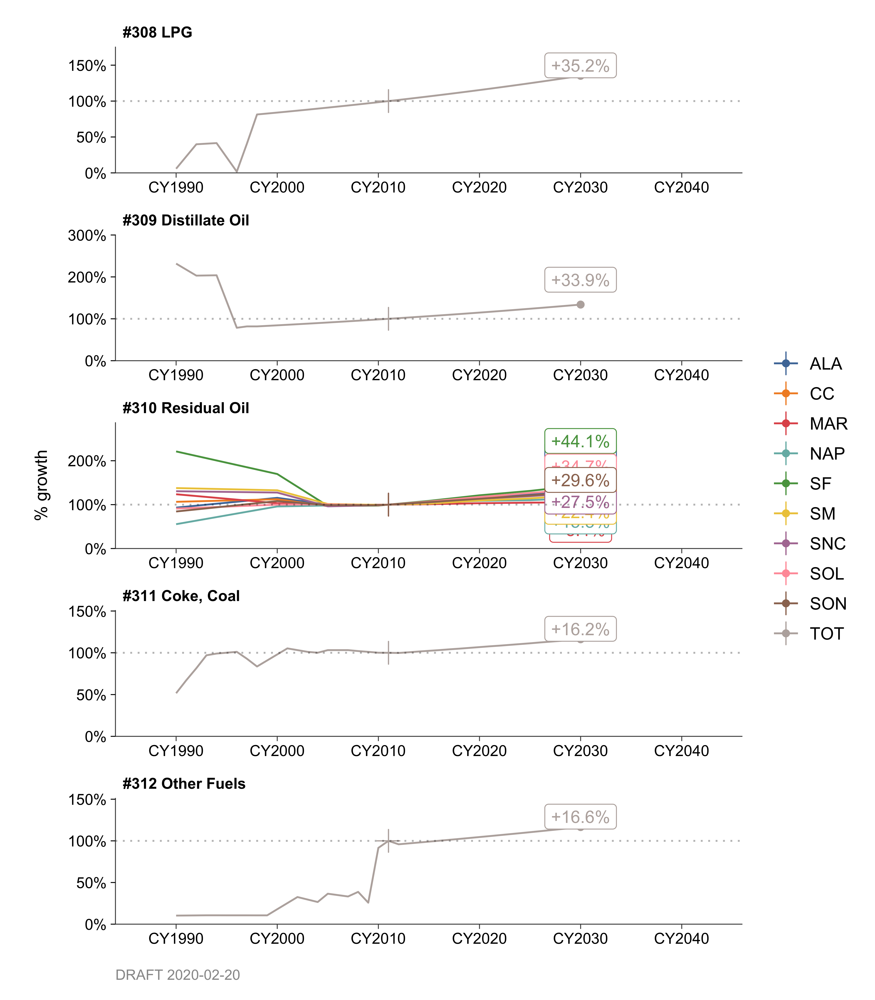
For Categories 308 and 309, it was felt that annual emissions, over the years, would tend to follow and be influenced in roughly equal amounts by two components as follow: manufacturing industry employment and services industry employment by county, all within the District jurisdiction. As such, the annual variation ratio value for each year, for each county involved, was developed as a hybrid, based on 50% of the appropriate county manufacturing industry employment value and 50% of the appropriate services industry employment value.
For Category #310, it was felt that annual emissions, over the years, would tend to follow and be influenced mainly by manufacturing industry employment by county, all within the District jurisdiction. As such, the annual variation ratio value for each year, for each county involved, was developed to follow the manufacturing industry employment value.
For Category #311, it was felt that annual emissions, over the years, would tend to follow and be influenced in roughly equal amounts by two components as follow: manufacturing industry employment and construction industry employment by county, all within the District jurisdiction. As such, the annual variation ratio value for each year, for each county involved, was developed as a hybrid, based on 50% of the appropriate county manufacturing industry employment value and 50% of the appropriate construction industry employment value.
For Category #312, it was felt that annual emissions, over the years, would tend to follow and be influenced in roughly equal amounts by two components as follows: one-third by manufacturing industry employment and two-thirds by population by county, all within the District jurisdiction. As such, the annual variation ratio value for each year, for each county involved, was developed as a hybrid, based on 33.3% of the county manufacturing industry employment value and 66.7% of the appropriate county population value.
The employment and population data used for the above growth profiles were obtained from two sources, the Association of Bay Area Government’s (ABAG’s) 2009 “Projections” report and the “California Statistical Abstracts” document.
Control
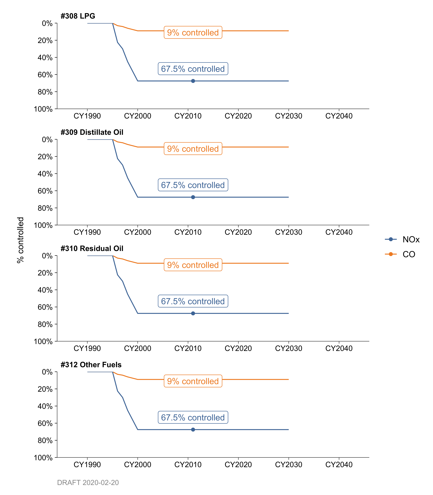
Regulation 9 controls emissions of NOx and SOx of combustion.
By: Sukarn Claire Date: January 2014 Base Year: 2011